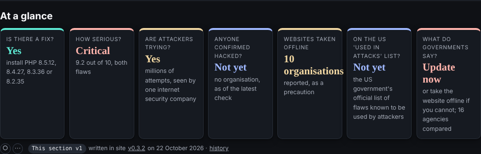
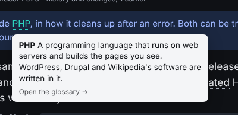

Positive on the approach, the personas and the glossary. Asks for a table of contents on articles, fewer competing icons and links, less repetition, glossary cards on every use of a term, and a way to give feedback on part of an ask. Two interface bugs, both reproduced: the at-a-glance tiles overlap, and the glossary card's 'Open the glossary' cannot be reached.
UF-001feedback id
2026-10-23received
v0.8.1site version
10points
6reproduced
The record
From: a power user from the collaborators group, reading as a developer. Readers are never named here.
How it came: email to the editor, forwarded to the Sherpa in session, about ask 001.
Version: v0.8.1. The reader did not say which version they read; 0.8.1 was live when the message arrived, and every point was re-checked on 0.8.1.
The reader's screenshot: on the left a glossary card (CWE), on the right the at-a-glance tiles with '10 organisations' running into the next tile.
Point by point
Each point in the reader's words, then the Sherpa's comment, whether the Sherpa could see what the reader saw (re-checked on the version above, in Chromium), and the recommendation. The Sherpa proposes; the member named acts.
The Sherpa's comment. The personas are the site's strongest navigation aid, and the reader went straight to one (Developer). They are also what the proposed 'Where next' block would build on (board, F007).
Recommendation. Build on them: let the chosen persona drive a 'Where next' block at the foot of every page.
Newsroom articles lack a clear TOC so it's difficult to get a feel for what they contain and to navigate them
The Sherpa's comment. Confirmed. Neither house story measured has a table of contents: 'Where php2shell stands' has 10 sections and about 2,100 words, 'Patch at the speed of Metasploit' 9 sections and about 2,950 words. The reader has to scroll to learn what the article covers.
Evidence. Measured on 0.8.1 in Chromium: no .toc element on articles/where-php2shell-stands/ or articles/patch-at-the-speed-of-metasploit/; h2 counts 10 and 9.
Recommendation. An 'On this page' list built from the h2s, at the top of every article and of every page with four or more sections; collapsed to one line on phones so it does not cost the first screen (F001). Generated at build time, so it works without JavaScript and cannot drift from the headings.
Pages are very dense of icons and links, so they can be confusing and it's also difficult to understand what you can actually do with all the tools available.
The Sherpa's comment. Confirmed, and it agrees with the board member's and the designer's synthetic runs (F001). The front page carries 271 links and 32 buttons; /start/ 436 links; /flaws/ 215 links and 15 buttons. Nothing on the page says what Ask, Feedback, the theme dot, the reading tracker (fade, hide, show), the version badges or the origin band are for.
Evidence. Counted on 0.8.1 in Chromium: links and buttons per page as above.
Recommendation. Three steps, cheapest first: a one-screen guide to the site's own tools, linked from a '?' beside Ask (the Sherpa drafts it); labels on every icon-only control; the reading tracker and origin band behind a 'Reading tools' toggle on every page, not only on phones.
With all the (useful) summaries and clarifications, you end up with feeding a lot of repetition. Hard balance to strike.
The Sherpa's comment. Plausible and partly seen: a page can carry a standfirst, an 'In plain English' box and a 'thirty seconds' answer that say much the same thing. Not measured yet. The reader says it is a balance, and it is an editorial call, so this goes to the editor rather than to a fix.
Evidence. Observed on briefings and the front page on 0.8.1; no count of repeated sentences yet.
Recommendation. One summary per page, chosen by the reader's depth: plain English for the plain-English reader, the technical one otherwise, with the other one folded. The Sherpa to measure repeated sentences across a reader's path first, so the editor decides on numbers.
The fact that only the first use of a specialist word has a tooltip can be limiting, as the reader might have missed where the first occurrence was or has jumped forward or might use a refresher on the term down the page. I understand that underlying every word keeps the page very busy for things that potentially the reader don't care about or has learned. Not sure what the best solution is, but the way it's built now tends to reduce the power of the glossary. I would be inclined to try keeping underlining the specialist words the first time they appear only, but keeping the tooltip active for every occurrence.
The Sherpa's comment. Confirmed, and the reader's proposal is a good one. On /flaws/, 'PHP' appears 41 times and 'CVE' 20 times, and each has a card on its first use only. A reader who arrives through an anchor, or jumps to a section, never meets the first use.
Evidence. Counted on flaws/index.html on 0.8.1: PHP 41 occurrences, CVE 20, CVSS 3, CWE 2; one card each.
Recommendation. As the reader proposes: the first use stays underlined; every later use carries the same card with no underline (a dotted underline only on hover or focus), so the page stays calm and the card is always there. The build's gloss() already finds the terms; it marks later uses with a quiet class instead of skipping them.
The feedback form in the Power Users page is about the whole ask, but since I only managed to make a partial progress, I'm writing an email here outlining the pages I managed to examine.
The Sherpa's comment. Confirmed by reading /collaborators/: the feedback form is per ask. The Feedback button on every page (v0.8.0) is per page, but it needs a key from an invitation, and no invitation has been sent yet (REALITY.md), so this reader had no way to send page-level feedback except email. The reader's email is itself a good template: progress, pages read, pros, cons, bugs.
Evidence. collaborators/index.html and REALITY.md on 0.8.1.
Recommendation. Use the reader's structure for the collaborators form: a progress field (none, partial, done), the pages read, then pros, cons and bugs, each optional. Let the Feedback button send unsigned feedback too, marked unsigned, so a reader without a key can report a bug from the page it is on. Email stays welcome; the Sherpa logs every message, whichever way it comes.
The text on the "at a glance" tiles on the front page overlaps (screenshot)
The Sherpa's comment. Reproduced in every theme and at most widths. The tile 'Websites taken offline' shows '10 organisations' in the 1.35rem serif; 'organisations' is wider than the tile (134 to 142px) and the stylesheet forbids breaking it (.tile b {overflow-wrap: normal}), so it runs 3 to 11px into the next tile. The other tiles fit.
Evidence. Measured on 0.8.1 in Chromium in all six themes at 320, 600, 768, 1024, 1280 and 1440px wide: overflow of 5, 9, 4, 11, 3 and 3px. Fits at 360, 390, 414 and 820px.

Replicated at 1024px, dark: '10 organisations' runs into the next tile.
Recommendation. Put the number alone in the large type ('10') and move the unit into the small line ('organisations took websites offline, as a precaution'), as the other tiles already do with 'Yes' and 'Not yet'. A guard for the next long word: .tile b {overflow-wrap: anywhere}. The gate's browser check could flag any element wider than its tile.
The "open the glossary -->" link from tooltip is unreachable (screenshot)
The Sherpa's comment. Reproduced, and it is unreachable by design: the card is drawn with pointer-events: none, it closes as soon as the pointer leaves the word, and 'Open the glossary' is plain text, not a link. The card promises an action it cannot give. Clicking the word itself does open the glossary, but nothing says so. On a touch screen the card cannot be opened at all without following the link.
Evidence. On flaws/index.html on 0.8.1 in Chromium: hovering 'PHP' shows the card (no links inside it, pointer-events none); moving the pointer to 'Open the glossary' closes it. Code: the showTip() and mouseout handler in the site script written by build_sitejs(), and .tip in assets/site.css.

Replicated: the card on 'PHP'; its last line is text, and the card closes before the pointer reaches it.
Recommendation. Quick and honest: change the line to 'Click the word for the glossary entry'. Proper: make the line a real link to the term's glossary entry, let the card take the pointer (pointer-events: auto) and keep it open for a short grace period while the pointer moves from the word to the card; on touch, the first tap opens the card and the link inside it goes on. Keyboard: focus already opens it; Escape closes it.
In the reader's screenshot the glossary card is cut off on the left. On 0.8.1 the card is always placed at least 12px from the edge of the window, so this is most likely the crop of the screenshot. To confirm with the reader.
Not sent. The Sherpa sends nothing to readers; a reply, if any, is the editor's.